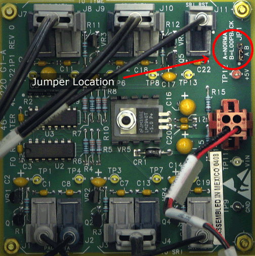

Illustration 2:
Fiber Optic Repeater Board Loopback Jumper

NOTE:
To put the jumper in the B position, place the black jumper on the top two prongs. To put the jumper in the A position, place the black jumper on the bottom two prongs.